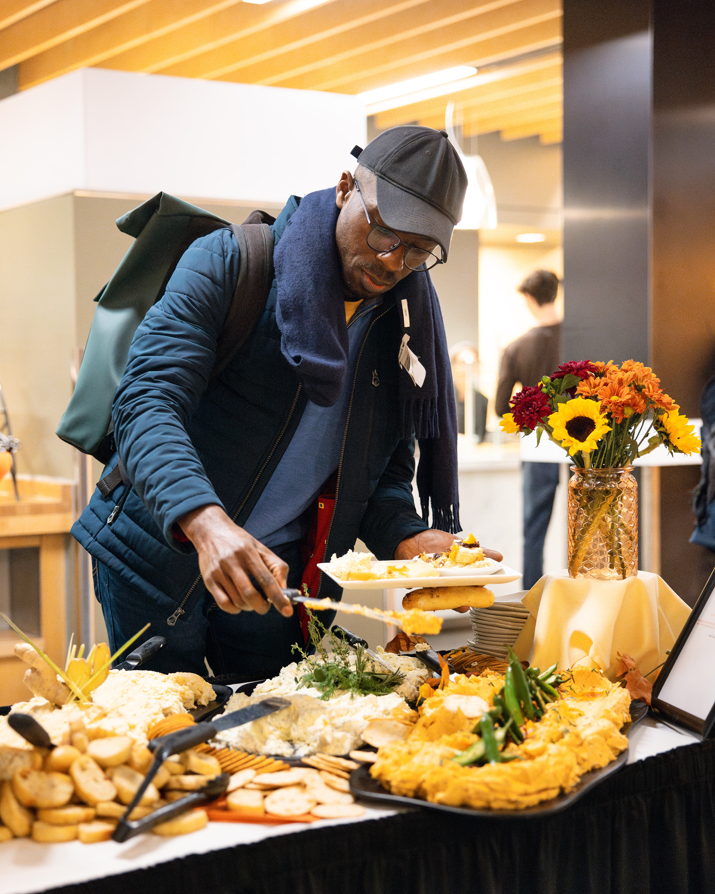

Skip to Main Content
Skip to Main ContentEquitable access to nutritious food and essential resources for the U-M community.
We are committed to ensuring every U-M student has access to healthy food and essential items, regardless of financial or logistical constraints. Our mission is to support students in achieving their academic and personal goals through resource accessibility and education.
What we provide
- Nutritious Food: Fresh produce, dairy, grains, and shelf-stable items
- Kitchen Essentials: Cookware, utensils, and storage solutions
- Personal Care: Hygiene products, cleaning supplies, and school materials
- Campus Support: Connections to financial aid, mental health services, and SNAP assistance

How to Access Our Services
- Schedule an Appointment: Shop by appointment to ensure privacy and convenience
- Visit Our Location: Betsy Barbour Residence Hall, enter via Maynard Street
- Get Assistance: Our team is here to help with any additional support
How you can help
Make a difference in the lives of fellow students by donating or volunteering. Every contribution helps ensure food security across campus
Testimonials
"MBC has been a lifesaver during my time at U-M, providing not just food, but a supportive community."
